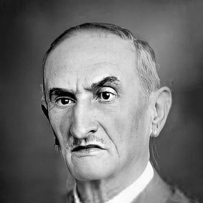

Patrono Félix Guisard

Conheça a história de Félix Guisard fundador do SENAI Taubaté
A instituição Senai Felix guisard recebeu essa denominação em homenagem ao empresário e pioneiro da educação para o trabalho, criador da Sociedade para o Ensino Industrial de Taubaté. Guisard foi também pioneiro da educação para o trabalho, ao criar em 1900 a Sociedade para o Ensino Industrial de Taubaté, agora denominada Escola SENAI Félix Guisard, com a criação de cursos noturnos para explicação de: Direito Comercial, Geografia Comercial, Usos e Costumes Comerciais e Escrituração Mercantil.
Linha do Tempo Biografia